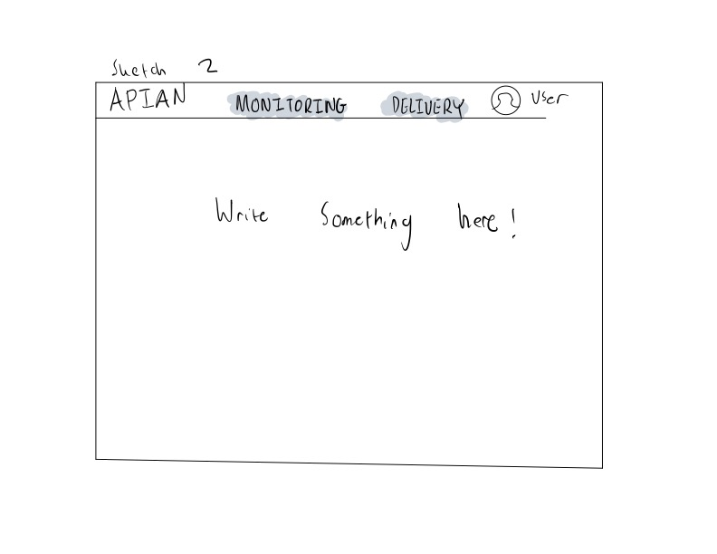
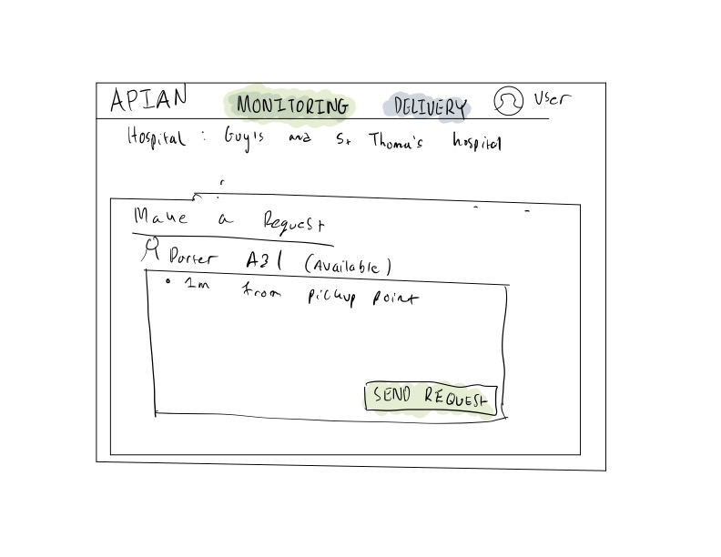
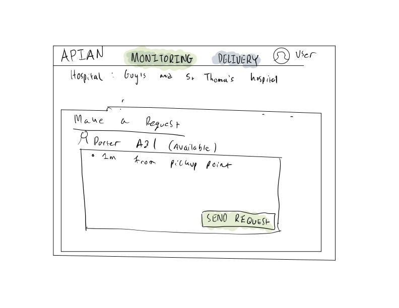
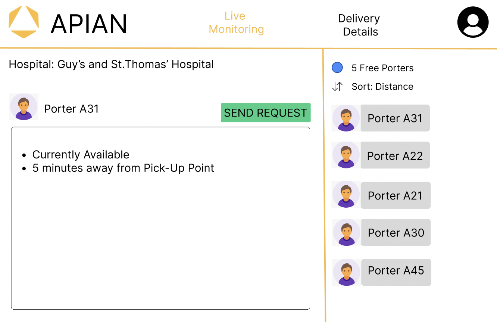
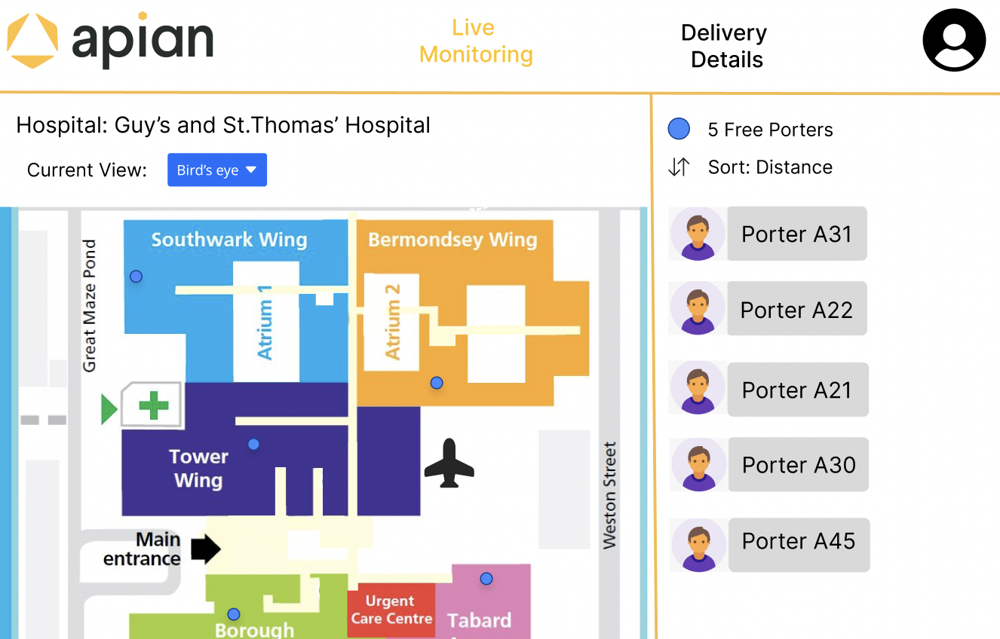

User Interface Design
Initial Paper Sketches
Figma Prototyping
Figma ▶ Web Design
Final Website User Interface
Final Website User Interface
Client Requirements
Upon consultation with our client, we identified the crucial requirements for our web design project
in a hospital setting.
As a result, we embarked on sketching our initial design, primarily using hand-drawn techniques on a
tablet.
Our first sketch was crucial to us, as it had to incorporate a number of client-identified key
features including:
-
The ability for medical staff dispatchers to:
- Track the live location of porters
- View the availability of porters
- Send delivery requests to available porters based on factors like:
- Their proximity to the pick-up point
- Their availability
Initial Prototype Sketches
Sketch 2:
 


In our first sketch, usability and simplicity were our main priorities, so that hospital staff
do not experience any difficulties
when it comes to navigating our website. As a result, we designed a home page that features a
navigation bar to allow users to switch between the live monitoring and
delivery details page effortlessly.
The live monitoring page comprises markers for porters, displaying their availability on the
side. We have also incorporated a feature that enables
users to sort the porters by distance, ensuring that the nearest porter is assigned to a
particular delivery request. Clicking on an available
porter sends the user to the delivery request page.
The delivery details page features a comprehensive history of on-going deliveries, allowing the
medical staff to monitor which porters are delivering
which supplies.
Our second sketch is an improvement of the first, with subtle changes to enhance usability. We
have added a view option in the live monitoring page,
enabling users to see different parts of the hospital. We have also created a table on the
delivery request page, which promotes organization and ease
of access.
The sketches seen above are preliminary designs, created for the purpose of comparison before
proceeding to the interface design stage using Figma.
As mentioned previously, our sketches ensured that the final design is user-friendly, intuitive,
and efficient for medical staff in a hospital setting,
so that deliveries can be fulfilled as quickly as possible.
Figma Prototyping

After an internal meeting with our team, we decided to choose the best components from the previous two sketches and decided to create a design on Figma. This is to show our client and for them to provide concrete feedback. As per the requirement this sketch includes all the important ones such as live monitoring, delivery requests, and delivery history. We also paid attention to detail such as coloring and made the theme similar to the Apian Logo.
Figma Iterations
 
The process of designing a user interface and user experience for our web application involved multiple
stages of iterations as we would discuss potential designs amongst ourselves as well as going back and
forth with our client to ensure that we were incorporating features they wanted and needed. Our team had
the pleasure of working with a client who provided invaluable feedback during the design process, particularly
during our first Figma design review, where Apian's UI/UX specialist offered us constructive criticism, such as
recommending the use of a different font size and thickness for the display options and ensuring that the navigational
menu was distinct from the rest of the page. Additionally, she suggested incorporating Bootstrap UI icons
for dropdown and 'sort by' components, which would enhance the user's ability to navigate the interface.
She also advised us to improve the display of the active page, which was not entirely obvious in the initial design
and could lead to potential confusions.
From figma to web design
After implementing the feedback, we moved on to the development phase of our project, where we started to bring the designs to life. However, as we began to code, we realized that there were additional features that we had not considered. We needed to add options for users to specify pickup or delivery locations and integrate beacons on the map, among other things. Therefore, we had to go back and make changes to the design that we had previously thought were final.

One example of the changes, which made can be observed in the image above, is the porter table on the Live Monitoring page. We not only included the porter's name but also added information on their status, last updated, and the ability to make them available or unavailable or even delete them. We went back and forth with our client during our weekly meetings to ensure that these additional features were aligned with their needs.
Final Website

Finally, we are proud to say that we have finalized our UI/UX for our web app. As you can observe in the final design, we removed
the initial sample floorplan and included the actual hospital floor plan of Wansbeck Hospital where our project would be deployed.
We refined the design to make it cleaner and used bright or dark colors to highlight essential actions. We also made it easy to toggle
between hospital floors and zoom in/out of the hospital floorplan for more precise delivery locations.
As a result, we successfully
designed and built a user-friendly, intuitive web application that would be beneficial to our client and the hospital staff that
would make use of it.